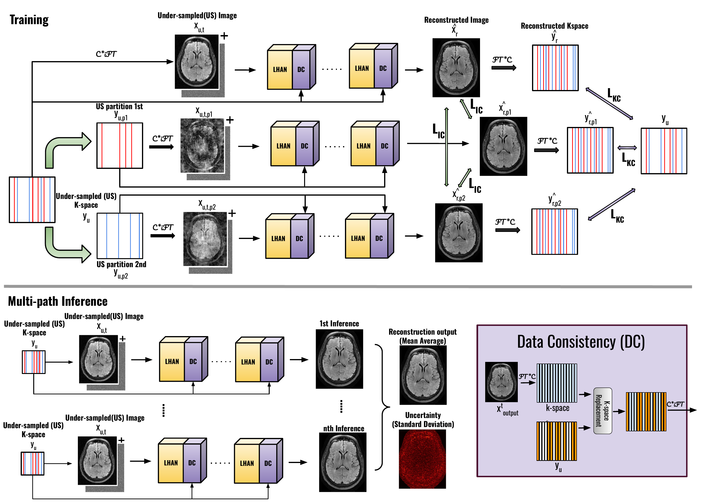
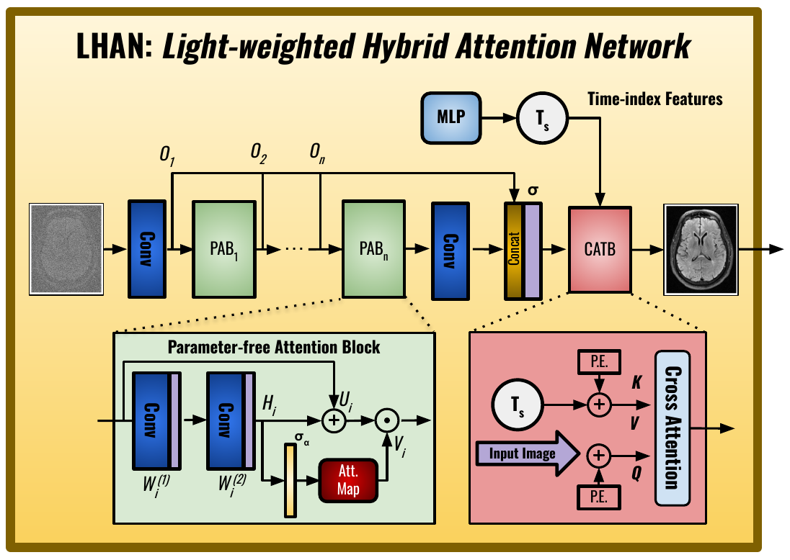
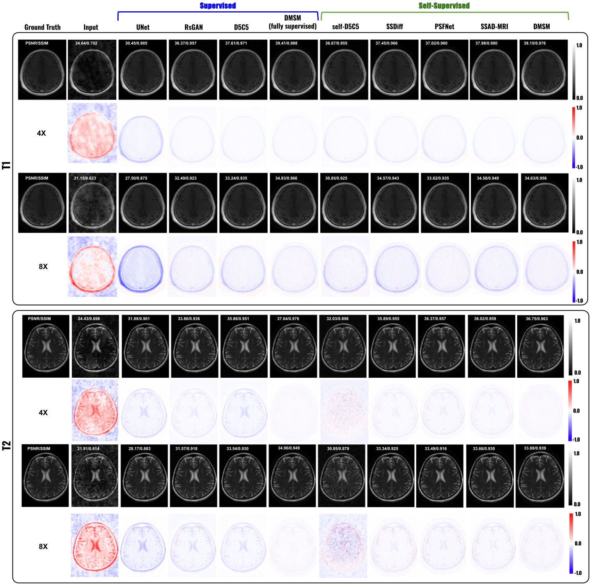
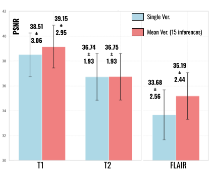

Abstract
Magnetic resonance imaging (MRI) is a vital diagnostic tool, but its inherently long acquisition times reduce clinical efficiency and patient comfort. Recent advancements in deep learning, particularly diffusion models, have improved accelerated MRI reconstruction. However, existing diffusion models' training often relies on fully sampled data, models incur high computational costs, and often lack uncertainty estimation, limiting their clinical applicability. To overcome these challenges, we propose a novel framework, called Dual-domain Multi-path Self-supervised Diffusion Model (DMSM), that integrates a self-supervised dual-domain diffusion model training scheme, a lightweight hybrid attention network for the reconstruction diffusion model, and a multi-path inference strategy, to enhance reconstruction accuracy, efficiency, and explainability. Unlike traditional diffusion-based models, DMSM eliminates the dependency on training from fully sampled data, making it more practical for real-world clinical settings. We evaluated DMSM on two human MRI datasets, demonstrating that it achieves favorable performance over several supervised and self-supervised baselines, particularly in preserving fine anatomical structures and suppressing artifacts under high acceleration factors. Additionally, our model generates uncertainty maps that correlate reasonably well with reconstruction errors, offering valuable clinically interpretable guidance and potentially enhancing diagnostic confidence.
Method


Results


Citation
@article{zhang2025dual,
title={Dual-domain Multi-path Self-supervised Diffusion Model for Accelerated MRI Reconstruction},
author={Zhang, Yuxuan and Hao, Jinkui and Zhou, Bo},
journal={arXiv preprint arXiv:2503.18836},
year={2025}
}